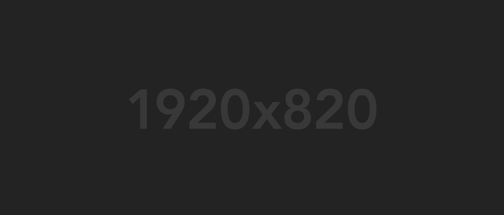

Galeri
Dokumentasi Kegiatan Sekolah
MAS MALNU Kananga memiliki berbagai dokumentasi kegiatan sekolah yang mencakup aktivitas akademik, ekstrakurikuler, keagamaan, dan berbagai momen penting lainnya. Galeri ini menampilkan berbagai foto yang menggambarkan suasana belajar mengajar, kegiatan siswa, dan prestasi yang telah diraih oleh madrasah.
Kegiatan Belajar Mengajar
Dokumentasi kegiatan belajar mengajar di kelas-kelas MAS MALNU Kananga dengan interaksi aktif antara guru dan siswa.
Ekstrakurikuler Pramuka
Kegiatan ekstrakurikuler pramuka yang rutin dilaksanakan setiap minggu untuk membentuk karakter dan kedisiplinan siswa.

Prestasi Akademik
Berbagai prestasi akademik yang diraih siswa-siswi MAS MALNU Kananga dalam berbagai lomba dan kompetisi.

Kegiatan Keagamaan
Berbagai kegiatan keagamaan yang rutin dilaksanakan di MAS MALNU Kananga, termasuk shalat berjamaah dan pengajian kitab kuning.

Ekstrakurikuler Paduan Suara
Grup paduan suara MAS MALNU Kananga yang aktif mengikuti berbagai lomba dan acara pentas seni.
Kegiatan Olahraga
Berbagai kegiatan olahraga yang dilakukan siswa-siswi MAS MALNU Kananga untuk menjaga kebugaran dan mengembangkan keterampilan olahraga.
Dokumentasi Lainnya
Upacara Bendera
Upacara bendera yang dilaksanakan setiap hari Senin pagi di halaman madrasah sebagai bagian dari pembentukan karakter siswa.
Kegiatan Sekolah Lainnya
Berbagai kegiatan sekolah lainnya yang mendukung pengembangan siswa secara menyeluruh, termasuk perayaan hari besar nasional dan kegiatan bakti sosial.

Acara Khusus
Berbagai acara khusus yang diselenggarakan madrasah seperti perayaan Hari Santri Nasional, Hari Pendidikan Nasional, dan acara penting lainnya.
Galeri Fasilitas
Dokumentasi fasilitas yang tersedia di MAS MALNU Kananga untuk mendukung proses belajar-mengajar dan kegiatan siswa.

Ruang Kelas
Ruang kelas yang nyaman dan kondusif untuk kegiatan belajar mengajar dengan fasilitas yang memadai.

Laboratorium
Laboratorium sederhana untuk praktikum IPA yang menunjang pembelajaran sains di madrasah.

Perpustakaan
Perpustakaan yang menyediakan koleksi buku pelajaran, referensi ilmiah, dan kitab-kitab keagamaan.

Masjid
Fasilitas ibadah berupa masjid atau musholla di lingkungan sekolah untuk shalat berjamaah dan kegiatan keagamaan rutin.

Asrama
Fasilitas asrama santri yang memungkinkan sebagian siswa tinggal dan mondok untuk mendalami ilmu agama di luar jam sekolah.

Lapangan Olahraga
Fasilitas olahraga berupa lapangan atau halaman yang digunakan untuk berbagai kegiatan olahraga dan upacara.
Madrasah Aliyah Swasta MALNU Kananga berkomitmen untuk mencetak generasi muda yang berakhlak mulia, cerdas, dan siap menghadapi tantangan zaman melalui pendidikan berkualitas yang seimbang antara ilmu umum dan keislaman.
Tautan Cepat
Jam Operasional
- Senin 07:00 - 16:00
- Selasa 07:00 - 16:00
- Rabu 07:00 - 16:00
- Kamis 07:00 - 16:00
- Jumat 07:00 - 16:0
- Sabtu 07:00 - 12:00
- Minggu Tutup